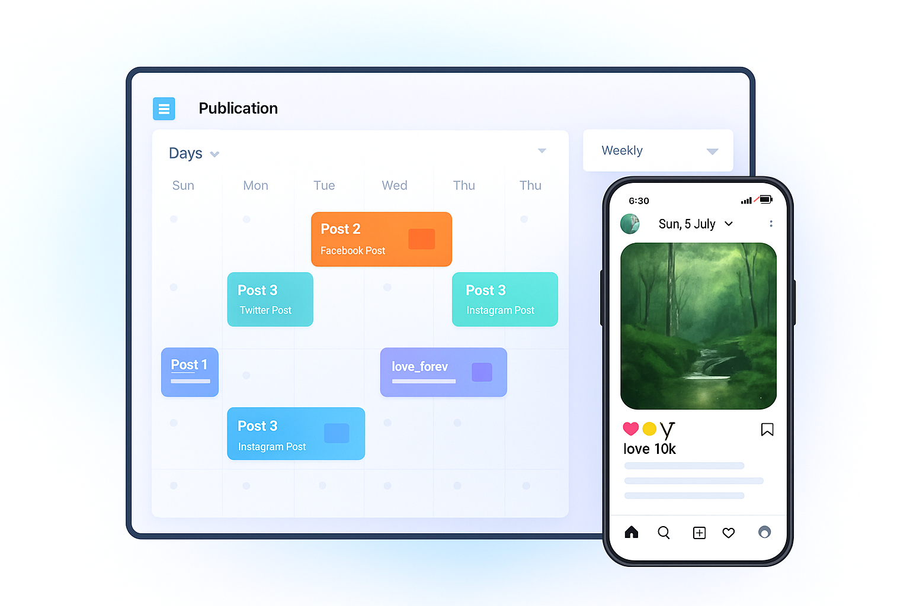

<section class="hero">
  <div class="hero-content">
    <h1>Plan, Schedule & Analyze Your Social Media Posts</h1>
    <p>
      All your social media in one smart dashboard — automate posts, track analytics, and grow
      faster.
    </p>
    <div class="cta-buttons">
      <button mat-raised-button color="primary">Try Free Demo</button>
      <button mat-stroked-button color="accent">View Analytics</button>
    </div>
  </div>

  <div class="hero-visual">
    
  </div>
</section>
